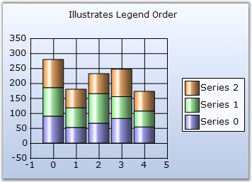
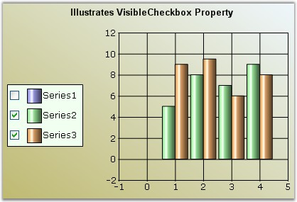

The legend item is represented by the ChartLegendItem type.
Default Series LegendItems
Every ChartSeries in the chart control has a ChartLegendItem associated with it. This legend item gets automatically added to the default ChartLegend.
But, if you want to get that associated with a custom ChartLegend, use the LegendName to specify that chart legend as follows:
|
[C#]
// Specifies the custom ChartLegend with which this series' legend item should be associated with series1.LegendName = "MyLegend"; |
|
[VB.NET]
' Specifies the custom ChartLegend with which this series' legend item should be associated with series1.LegendName = "MyLegend" |
Adding Custom Legend Items
To add your own custom legend items to a legend, use the CustomItems property in the ChartLegend as follows.
|
[C#]
// Adding some custom items into the 2nd custom Legend
ChartLegendItem legendItem1 = new ChartLegendItem(); legendItem1.ItemStyle.ShowSymbol = true; legendItem1.ItemStyle.Symbol.Shape = ChartSymbolShape.Circle; legendItem1.ItemStyle.Symbol.Color = Color.Blue; legendItem1.Text = "Legend Item";
this.chartControl1.Legends[1].CustomItems = new ChartLegendItem[] { legendItem1}; |
|
[VB.NET]
'Adding some custom items into the 2nd custom Legend
Dim legendItem1 As New ChartLegendItem() legendItem1.ItemStyle.ShowSymbol = True legendItem1.ItemStyle.Symbol.Shape = ChartSymbolShape.Circle legendItem1.ItemStyle.Symbol.Color = Color.Blue legendItem1.Text = "Legend Item"
'Adding the custom Legend item to the chart Me.chartControl1.Legends[1].CustomItems = New ChartLegendItem() {legendItem1} |
Figure 281: Custom Legend Item
Customizing items through event
There is also a way to specify custom legend item via events right before they get rendered.
In this example, we reverse the order in which the legend items are rendered through the FilterItems event.
|
[C#]
private void Legend_FilterItems(object sender, ChartLegendFilterItemsEventArgs e) { //This creates an new instance of the ChartLegendItemCollection ChartLegendItemsCollection items = new ChartLegendItemsCollection(); for (int i = e.Items.Count - 1; i >= 0; i--) items.Add(e.Items[i]); e.Items = items; } |
|
[VB.NET]
Private Sub Legend_FilterItems(ByVal sender As Object, ByVal e As ChartLegendFilterItemsEventArgs) 'This creates an new instance of the ChartLegendItemCollection Dim item As New ChartLegendItemsCollection() For i As Integer = e.Items.Count - 1 To 0 Step -1 item.Add(e.Items(i)) Next e.Items = item End Sub |

Figure 282: Chart with Legends in specified order using FilterItems Event
Legend Item's Look and Feel
The legend item's look and feel can be customized to a good extent using the following properties in ChartLegend.
These settings affect all the items in the legend.
|
ChartLegend Property |
Description |
|
RowCount |
Specifies the number of rows to be used in the legend. |
|
ColumnCount |
Specifies the number of columns to be used in the legend. |
|
ItemsAlignment |
Specifies the horizontal alignment of the items within the legend. Possible values: Near - Default value Center Far |
|
ShowItemsShadow |
Will render a shadow around the item image and text using the ItemsShadowColor. Default is false. |
|
ItemsShadowColor |
Specifies the color of the shadow to use. ShowItemsShadow should be set to true. Default is Gray. |
|
ItemsShadowOffset |
Specifies the breadth of the shadow. Default is {2, 2}. |
|
ItemsSize |
Specifies the size of the legend item rectangle. If the specified size is smaller than necessary to render the text, then it's ignored. |
|
ItemsTextAlignment |
Specifies the vertical alignment of the legend item text within the item bounds. Possible Values: Bottom Center - Default value Top |
|
Spacing |
Specifies the space between the legend borders and the legend items. Default is 4. |
|
Text |
Specifies the title text for the legend. You can set multiline text for the legend; Enter the text in the combobox and press ENTER key to begin a new line and CTRL+ENTER to set the entered multiline text. |
|
TextColor |
Specifies the color of the title text. |
|
TextAlignment |
Specifies the horizontal alignment of the title text. Possible Values: Center (Default value) Far Near |
Table 4: ChartLegend Event
|
Event |
Description |
Arguments |
Type |
Reference links |
|
MinSize |
Used to specify a minimum rectangular size for the legend item. |
object sender, ChartLegendMinSizeEventArgs e |
NA |
NA |
|
DrawItem |
Used to customize the rendering of the legend. |
object sender, ChartLegendDrawItemEventArgs e |
NA |
NA |
|
DrawItemText |
Used to customize the rendering of the legend item text. |
object sender, ChartLegendDrawItemTextEventArgs e |
NA |
NA |
|
FilterItems |
Used to dynamically provide a list of legend items during runtime. |
object sender, ChartLegendFilterItemsEventArgs e |
NA |
NA |
|
ChartLegend Method |
Description |
|
GetItemBy |
Gets the legend item at the specified coordinates. |
You can also reference specific legend items and apply settings on them individually:
|
LegendItem Property |
Description |
|
BorderColor |
Specifies the color of the border around the legend shape. |
|
Font |
Specifies the font for the text in this legend item. |
|
Spacing |
Specifies the space between this item and it's adjacent items. Default is 20. |
|
Text |
Specifies the text of the legend item. By default this will reflect the corresponding series name. |
|
TextColor |
Specifies the text color for this item. |
|
IconAlignment |
Specifies how the icon should be aligned within the item rectangle. |
|
TextAlignment |
Specifies how the text should be aligned within the item rectangle. |
|
VisibleCheckBox |
If this property is set to true, a checkbox will be shown beside the legend item through which the user can show/hide the corresponding series in the chart. |
|
ShowShadow |
Will render a shadow around the item image and text using the ItemsShadowColor. |
|
ShadowOffset |
Specifies the breadth of the shadow. |
|
ShadowColor |
Specifies the color of the shadow to use. ShowItemsShadow should be set to true. Default is Gray. |
|
Children |
Returns the child collection of the LegendItem. |
|
IsChecked |
Gets / sets the checkstate of the ChartLegendItem checkbox. By default it is set to true. |
|
Visible |
Lets you show / hide the legend item. |

Figure 283: Chart with "Series1" Legend Item Unchecked
Figure 284: Chart with Multiline Legend Title 'Multiline Legend Text'
See Also
ChartLegend, Customizing LegendItem Image